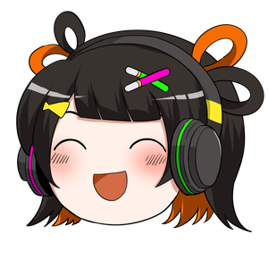

先日そうお話しされていたのが、ずっと引っかかっていました。
開ける前に見えるようにできないか、という話です。
会場の大きさ、物販の仕入れ、告知にいくら使うか。
当日まで読めないと、どれも決めきれません。演者本人も落ち着かないと思います。
SNSで知らせても、思ったほど反応がない。理由のひとつは、たぶんここです。
投稿した瞬間に見た人しか届きません。数時間後には流れています。 「知らなかった」と後から言われるのは、ファンのせいではなく仕組みの問題です。
LINEなら通知で届いて、トークに残ります。読み返せます。 いまこのページも、LINEでお送りしています。
イベントが決まってから終わるまで、それぞれの場面でできることがあります。 すでに動いているものと、これから作るものが混ざっています。
ライブ・舞台に限りません。撮影会、握手会、写真展、即売会、海外のイベント。 人が集まる予定なら、同じ仕組みで扱えます。
実際の画面です。知らせて、答えてもらうところまで。

もう使っているアプリで届きます。新しく登録してもらう必要がありません。
「行きます」を押した人が集まります。何人来そうかが、開ける前に見えてきます。
出演情報・チケット・お問い合わせ。見てほしいものを常に置いておけます。
個人アカウントのパスワードを共有せずに、担当を分けて運用できます。
大きすぎれば空席が目立ち、小さすぎれば入れない人が出ます。
余れば在庫、足りなければ売り逃し。どちらもそのまま損になります。
足りていれば抑えられます。届いていなければ、早めに手を打てます。
当日まで分からないのは、出る本人が一番落ち着かないと思います。
音声メッセージを受け取って、声で返します。実際に動かした様子です（約20秒・音が出ます）。
▶ を押すと音が鳴ります。音声合成には VOICEVOX を使用しています（VOICEVOX：白上虎太郎）。
本題ではありませんが、同じアカウントで受けられます。ひとつだけお伝えしたいことがあります。
| Xで DM を送ってくる方 | 届く先 |
|---|---|
| フォローしている方 | 通常の受信トレイ |
| フォロー外・X有料プラン | メッセージリクエスト（別のトレイ） |
| フォロー外・無料アカウント | 届きません |
2023年7月14日以降の仕様です。X に課金していない企業のご担当者は、送信ボタンを押せません。 運用でどうにかできる話ではないので、窓口をひとつ置いておくと取りこぼしが減ります。
LINE公式アカウントで受け取るのは、アカウント内だけで有効な識別子と表示名だけです。 お電話番号・ご本名・メールアドレスは取得しません。 メールでのお問い合わせのほうが、かえって実際のアドレスが手元に残ります。
認証済アカウント（緑のバッジ）は申請無料・審査5〜10営業日です。 2026年4月に未認証アカウントのバッジが廃止されるため、 「公式はこれだけ」と示せること自体が、なりすまし対策になります。
先にお伝えしておきます。全部が完成しているわけではありません。
| できること | 状態 |
|---|---|
| LINEで告知を届ける・お問い合わせを受ける | 動きます |
| 音声メッセージに声で返す | 動きます |
| 配信の応援を記録に残す | 公開中（ニコニコ生放送） |
| 当日「これから行く」でつながる | 動きます |
| 参加表明を集めて人数を見る | 画面は触れます。育てている途中です |
| 「あと何日」を出し続ける | 作っている途中です |
| YouTubeの配信にも対応 | これからです |
LINEは、送りすぎるとブロックされます。業種を問わず3割ほどというデータがあります。 週に1〜2回、知らせる意味があるときだけ送る前提です。宣伝ばかりだと外されます。
作っただけでは使われません。何をいつ送るかを決めて、続けて初めて動きます。 そこも含めてお手伝いできます。
検索したときのサジェスト対策の資料を、以前お渡ししていたかと思います。あれと同じ場所です。
お名前で検索したときに、望まない語が並ぶことがあります。 サジェスト・検索結果・風評への対策です。歯科・美容・通販と、 業種ごとに作り分けてきました。
タレントさんにとっては、たぶん両方が要ります。 名前が知られるほど、良いことも良くないことも書かれます。 届けることと守ることを、別々の会社に頼まなくて済みます。